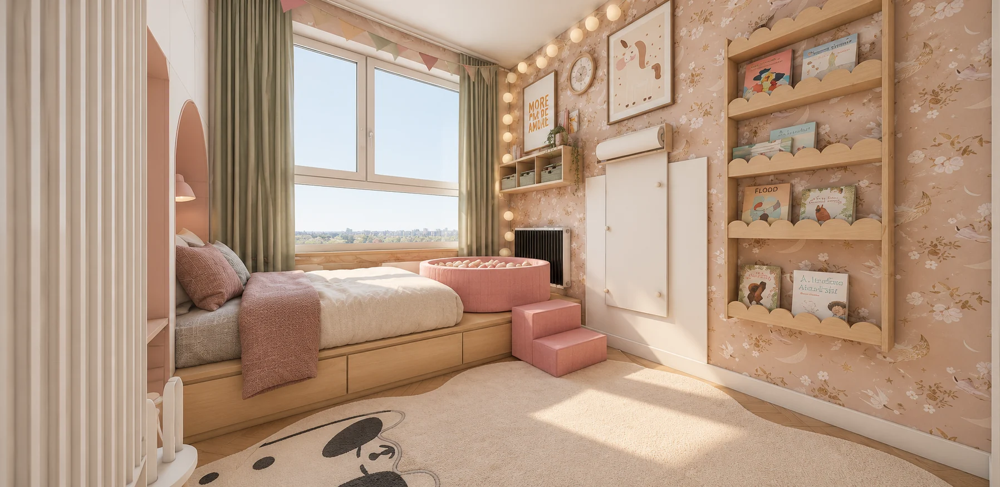

Jej własny
mały świat.
Pięć koncepcji pokoju Zosi. Obejrzyj każdy pomysł, porównaj podobne ujęcia i zbierz rzeczy, które najbardziej pasują do Was.
Porównaj projekty ↗
Każdy pomysł ma swój charakter.
Od pierwszego układu po najnowszą koncepcję.
To samo miejsce.
Inny pomysł.
Ujęcia pogrupowane według kierunku patrzenia.
Dokładny obraz możesz zmienić po każdej stronie.
Perspektywy są zbliżone, ale kamery i geometria projektów mogą się różnić. Suwak pomaga porównać wystrój; obrazy nie są idealnie nałożone.
Od pomysłu do pokoju.
Propozycje zakupów z wiadomości projektantki.
Odhaczenia zapisują się tylko w tej przeglądarce.
Lista pokazuje propozycje wymienione w danej wiadomości. Kolejne wersje nie są pełnymi kosztorysami i nie potwierdzają zakupu. Ceny, dostępność i aktualność linków nie były sprawdzane. Elementy widoczne wyłącznie na obrazach nie mają dopisanych modeli.